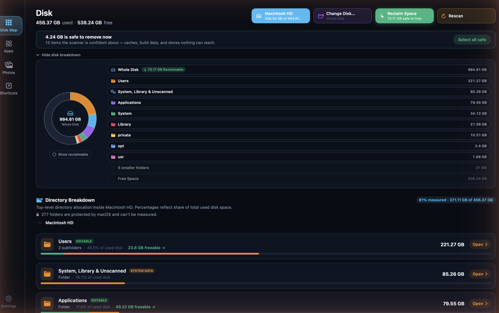

Disk
Disk map and reclaim, one screen
The donut is built from the real top-level folders on the volume, not generic categories — Users, System, Library, Applications, each its own wedge, with a “Show reclaimable” toggle that carves out what’s safe to free without a second chart.
Reclaim isn’t a separate tab: the same scan surfaces a “safe to remove now” total and a one-click “Select all safe”, and every folder row states what fraction of it is protected by macOS and can’t be measured — honesty about the unknown, not a rounded-up number.
